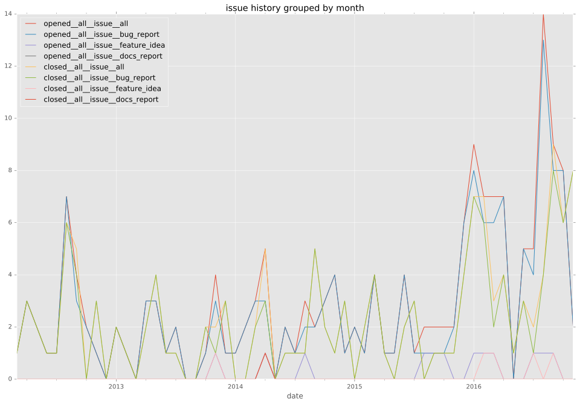

authors
maintainers
- ansible
contributors
- mpdehaan : 17 commits
- abadger : 7 commits
- shirou : 1 commits
- jpmens : 6 commits
- leucos : 8 commits
- davidobrien1985 : 5 commits
- Yannig : 4 commits
- jctanner : 4 commits
- mavimo : 1 commits
- skvidal : 3 commits
total issue counts
unknown: 2
feature pull request: 41
pullrequest: 241
docs pull request: 1
bugfix pull request: 196
feature idea: 5
issue: 71
bug report: 67
issue history

pullrequest history
days open by issue type
bugfix pull request
count: 283
std: 22.6936953632
min: 0
max: 223
median: 0.0
mean: 4.81272084806
all
count: 400
std: 64.7518772529
min: 0
max: 701
median: 0.0
mean: 19.6625
pullrequest
count: 0
std: nan
min: nan
max: nan
median: nan
mean: nan
docs pull request
count: 2
std: 0.0
min: 14
max: 14
median: 14.0
mean: 14.0
feature pull request
count: 60
std: 106.020959179
min: 0
max: 389
median: 5.0
mean: 69.2166666667
feature idea
count: 3
std: 359.505679139
min: 0
max: 701
median: 212.0
mean: 304.333333333
issue
count: 0
std: nan
min: nan
max: nan
median: nan
mean: nan
bug report
count: 50
std: 55.0989314315
min: 0
max: 211
median: 2.0
mean: 28.16
closures grouped by total days open